Працюємо з великими табличними масивами в Microsoft Excel
Таблиці Excel.
Аркуш книги Excel являє собою сукупність клітинок, в яких зберігаються різноманітні дані і по своїй суті та функціональності всі клітинки є однаковими. Тобто, за потреби, користувач повинен самостійно налаштовувати їх форматування, систематизувати та обробляти дані в них. Але, для того щоб автоматизувати ці процеси, Excel пропонує зручний інструмент – таблиці.
Таблиця Excel – це певна область робочого аркуша, яка має своє ім’я та структуру. Стовпці в такий таблиці мають назву – поля, рядки – записи.
Створення таблиці Excel:
- зробити поточною будь-яку клітинку суміжного діапазону з даними;
- перейти до вкладки Home (Основне), у розділі Styles (Стилі) обрати команду Format as Table (Формат таблиці);
- із списку обрати стиль форматування;
- для остаточного перетворення виділеного діапазону клітинок у таблицю Excel, в діалоговому вікні Format as Table (Форматувати як таблицю) натиснути кнопку ОК.
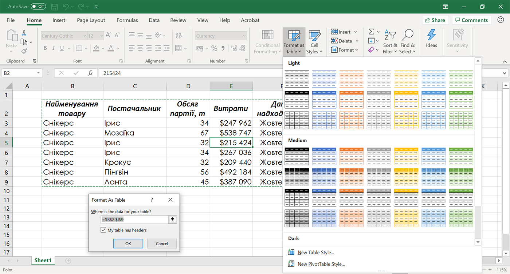
Після виконання зазначених вище команд на аркуші Excel буде створена таблиця, а на стрічці команд з’явиться додаткова вкладка Table Design (Конструктор таблиць).
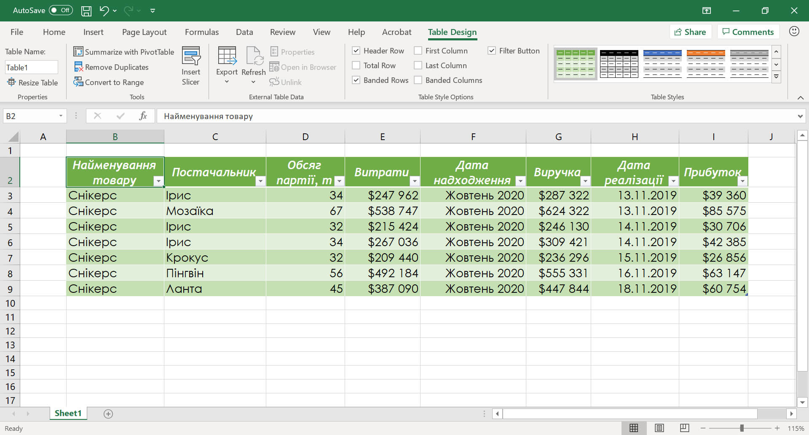
Додавання нових рядків та стовпців у таблиці.
Перетворивши діапазон даних у таблицю користувач зможе швидко додавати до неї нові дані, які будуть одразу відформатовані відповідно до її формату. Це можливо зробити декількома способами:
Почати вводити дані в порожній рядок (стовпець), що безпосередньо примикає до таблиці знизу (праворуч). В цьому випадку рядок або стовпець будуть автоматично включені в таблицю.
Розширити межі таблиці, перетягнувши правий нижній кут таблиці, так щоб включити в неї додаткові рядки або стовпці.
Сортування та фільтрація в таблицях.
При перетворенні вихідного діапазону у таблицю Excel дані з його першого рядка автоматично перетворюються на заголовки і до таблиці додаються фільтри. Якщо таблиця буде занадто велика, то при прокручуванні її вниз заголовки полів в таблиці замінять назви стовпців аркуша.
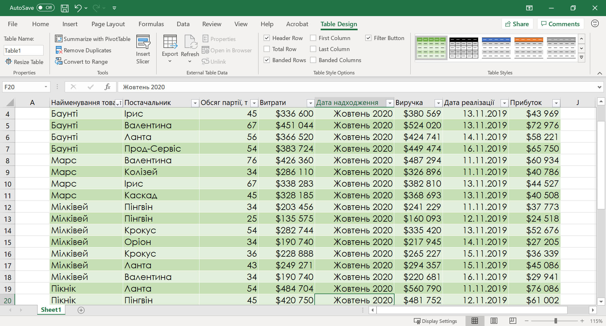
Фільтрація таблиці за роздільником.
Окрім стандартних засобів фільтрації даних у таблиці Excel існує ще один спосіб – роздільник.
Роздільник – це фільтр, винесений в окремий графічний елемент.
Вставка роздільника:
- зробити поточною будь-яку клітинку таблиці Excel;
- перейти на панелі інструментів до вкладки Table Design (Конструктор таблиць), у розділі Tools (Інструменти) обрати команду Insert Slicer (Вставлення роздільника);
- у вікні Insert Slicer (Вставлення роздільника) обрати один або декілька заголовків полів таблиці, за даними яких буде відбуватися сортування;
- для вставлення графічних елементів роздільника на аркуш Excel, натискаємо кнопку Ок.
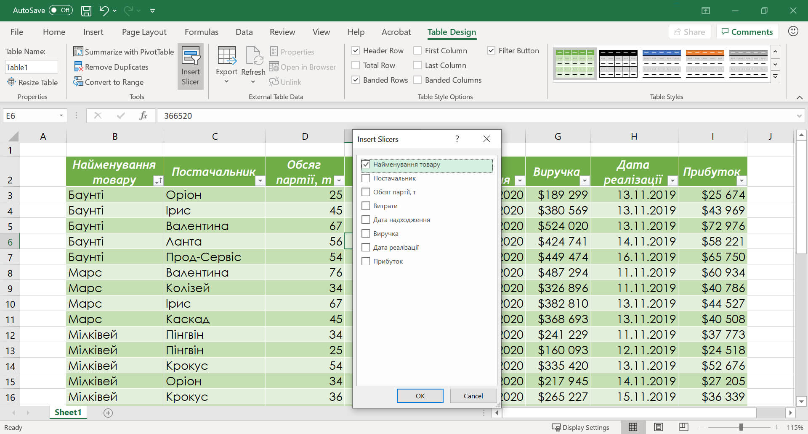
Після виконання зазначених дій, на аркуші Excel, з’явиться один або декілька графічних елементів роздільника з унікальними значеннями із обраного поля таблиці, а на стрічці команд додаткова вкладка Slicer (Роздільник).
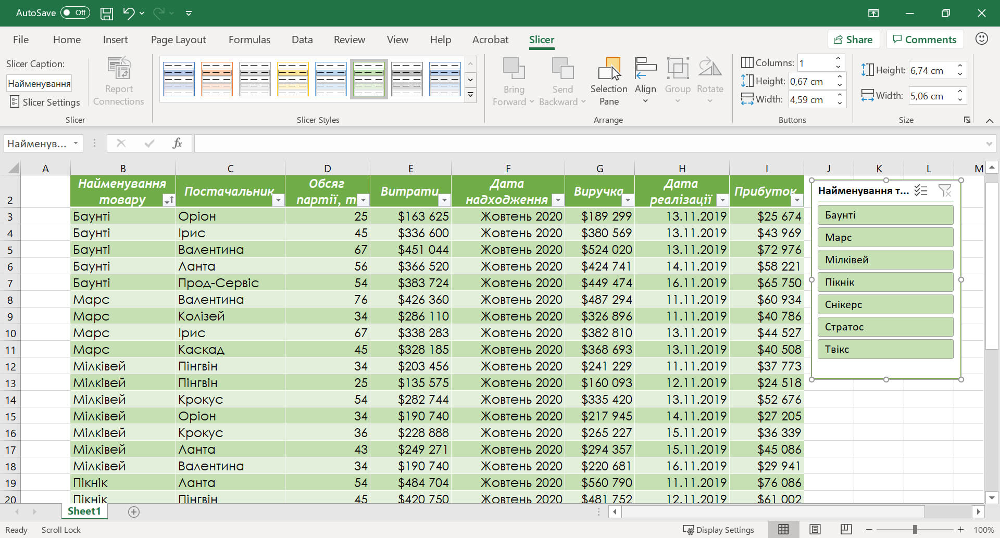
Для того щоб використовувати роздільник, треба обрати одне з його значень і в таблиці будуть відображені тільки ті записи (рядки), які відповідають обраному значенню. Якщо треба задати декілька значень, можна скористатися відповідним інструментом у вікні роздільника – Multi-Select (Множинний вибір).
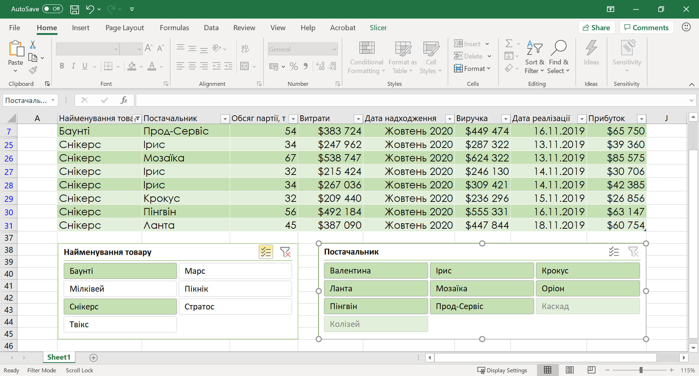
Якщо в таблиці є більше одного роздільника, вона буде фільтруватися відповідно до кожного обраного значення у кожному роздільнику. Для того щоб скасувати фільтрацію для певного роздільника, треба обрати інструмент Clear Filter (Очистити фільтр) в верхньому правому куті вікна роздільника.
Зміна параметрів стилю таблиці.
На вкладці Table Design (Конструктор таблиць), у розділі Table Style Options (Параметри стилів таблиць) знаходяться декілька опцій, завдяки яким можна змінювати певні параметри стилю таблиці. Перерахуємо їх:
- Header Row (Заголовок рядка) – вмикає і вимикає відображення рядка заголовка.
- Total Row (Рядок підсумків) – вмикає і вимикає відображення рядка підсумків.
- Banded Rows (Строкаті рядки) – вмикає і вимикає чергування рядків.
- First Column (Перший стовпець) – вмикає і вимикає спеціальне форматування для першого стовпця. Залежно від стилю таблиці ця команда може не грати ніякої ролі.
- Last Column (Останній стовпець) – вмикає і вимикає спеціальне форматування для останнього стовпця. Залежно від стилю таблиці ця команда може не грати ніякої ролі.
- Banded Columns (Строкаті стовпці) – вмикає і вимикає чергування стовпців.
- Filter Button (Кнопка фільтра) – вмикає і вимикає відображення кнопки списків фільтрів, що розкриваються в заголовку таблиці.
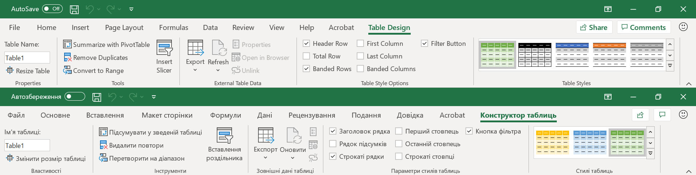
Розрахунки в таблицях.
До таблиці Excel можна додати Total Row (Рядок підсумків), який дозволяє обробляти дані для кожного поля за певними формулами.
Для обчислення підсумків необхідно виконати наступні дії:
- зробити поточною будь-яку клітинку таблиці Excel;
- перейти на панелі інструментів до вкладки Table Design (Конструктор таблиць), у розділі Table Style Options (Параметри стилів таблиць) поставити галочку навпроти Total Row (Рядок підсумків);
- у рядку Total (Підсумок) обрати для обчислення по полю потрібну функцію.
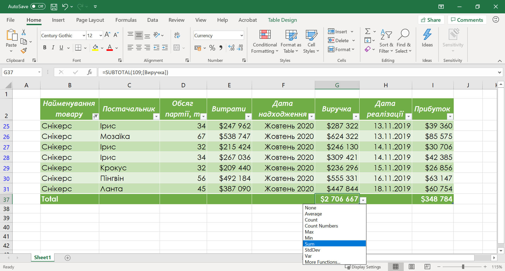
Для проведення розрахунків в полі, досить ввести формулу в одну з його клітинок. Excel автоматично розмножить її по всіх інших клітинках цього поля, а при додаванні нових записів, одразу копіюватиме у відповідні клітинки полів. Якщо параметри Excel встановлені правильно, при введенні формули в неї записуються не адреси клітинок, а імена полів.
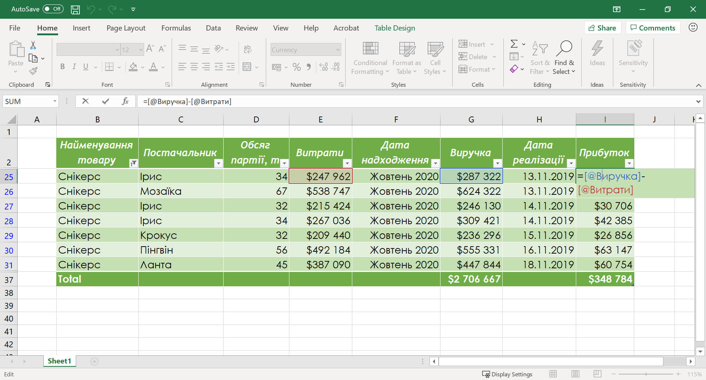
Видалення дублікатів записів.
З тих чи інших причин, у великих таблицях нерідко з'являються записи-дублікати і аналізувати дані з такими дублікатами не має ніякого сенсу, тому їх необхідно видаляти.
Видалення дублікатів з таблиці Excel:
- зробити поточною будь-яку клітинку таблиці Excel;
- перейти на панелі інструментів до вкладки Table Design (Конструктор таблиць), у розділі Tools (Інструменти) обрати команду Remove Duplicates (Видалити повтори);
- у вікні Remove Duplicates (Видалення повторів) обрати один або декілька заголовків полів таблиці, за даними яких буде відбуватися пошук дублікатів;
- для остаточного видалення дублікатів з таблиці, натискаємо кнопку Ок.
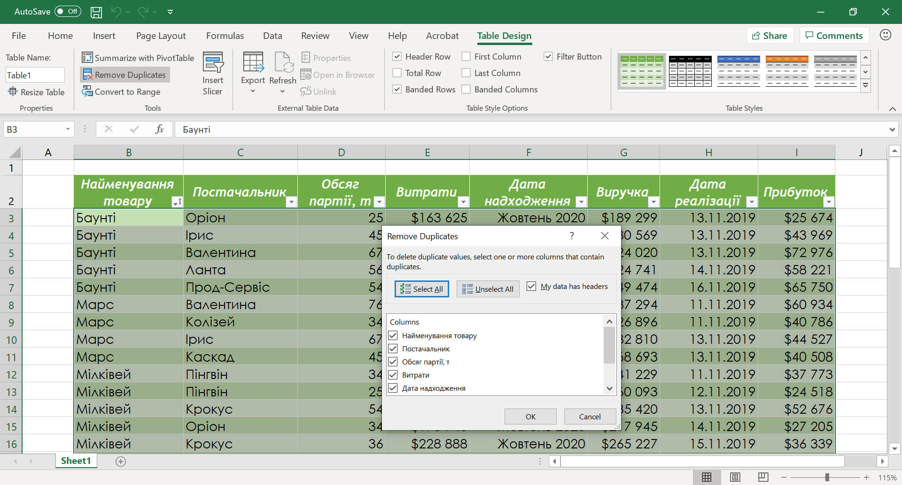
Але бувають випадки, коли вихідний діапазон даних треба зберегти, а вже на його основі зробити таблицю Excel без дублікатів.
Видалення дублікатів записів з таблиці Excel із збереженням вихідних даних:
- зробити поточною будь-яку клітинку таблиці Excel;
- перейти на панелі інструментів до вкладки Data (Дані), у розділі Sort&Filter (Сортування й фільтр) обрати команду Advanced (Додатково);
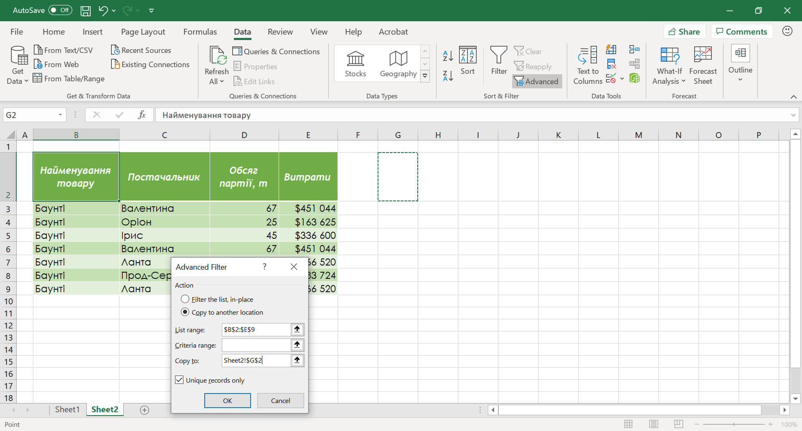
- у вікні Advanced Filter (Розширений фільтр) обрати:
- параметр Copy to another location (скопіювати результат до іншого розташування);
- в полі Copy to (Діапазон для результату) обрати першу клітинку діапазону де буде розміщено новий діапазон з унікальними даними;
- поставити галочку навпроти параметра Unique records only (Лише унікальні записи);
- для застосування обраних параметрів фільтрації та копіювання унікальних записів з вихідного діапазону, натискаємо кнопку Ок.
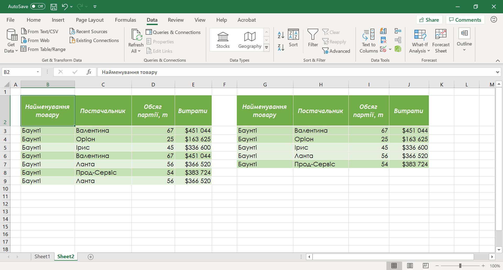
Перетворення таблиці в звичайний діапазон.
Коли ми працюємо з таблицями Excel діють певні обмеження, наприклад: не можна до таблиці додавати клітинки із зсувом, не можна об'єднувати клітинки, не можна додавати проміжні підсумки і таке інше.
Для того щоб подолати ці обмеження, зберегти формат та налаштування таблиці, треба перетворити її у звичайний діапазон.
Перетворення таблиці в звичайний діапазон:
- зробити поточною будь-яку клітинку таблиці Excel;
- перейти на панелі інструментів до вкладки Table Design (Конструктор таблиць), у розділі Tools (Інструменти) обрати команду Convert to Range (Перетворити на діапазон);
- для остаточного перетворення таблиці Excel у звичайний діапазон треба у вікні підтвердження натиснути кнопку Yes.
Проміжні підсумки.
При аналізі великого обсягу даних, представлених у вигляді таблиць, доволі часто виникає потреба в підведенні підсумків для частини записів. Зробити в Excel це можливо за допомоги інструменту – Subtotal (Проміжні підсумки).
Підсумки – це швидкий спосіб вставки функцій в певні поля таблиці з групуванням даних в стовпці, по якому підбиваються нідсумки.
Але, для застосування функції підрахунку проміжних підсумків до діапазону з даними, треба щоб він відповідав основним обов'язковим вимогам:
- звичайний діапазон, тобто формат таблиці обов'язково повинен бути представлений у вигляді звичайного діапазону клітинок.
- відсутність порожніх клітинок, тобто всі рядки і стовпці повинні бути заповнені даними;
- один рядок категорій тобто у шапці таблиці не можна використовувати кілька рядків категорій і вона повинна перебувати тільки на самому верхньому рядку і ніде більше.
Порядок створення проміжних підсумків:
- попередньо впорядкувати дані в таблиці по стовпцю, за значеннями якого потрібно підвести підсумок;
- зробити поточною будь-яку клітинку таблиці з даними;
- перейти на панелі інструментів до вкладки Data (Дані), у розділі Outline (Структура) обрати команду Subtotal (Проміжні підсумки);
- у діалоговому вікні Subtotal (Проміжні підсумки) в списку, що випадає At each change in (При кожній зміні в) зазначити стовпець, по значенням якого будуть додані проміжні підсумки;
- у списку Use function (Використовувати функцію) обрати функцію для розрахунку проміжних підсумків;
- У списку Add subtotal to (Додати підсумки до) зазначити всі поля, для яких потрібно підвести підсумки;
- для застосування обраних параметрів натискаємо кнопку Ок.
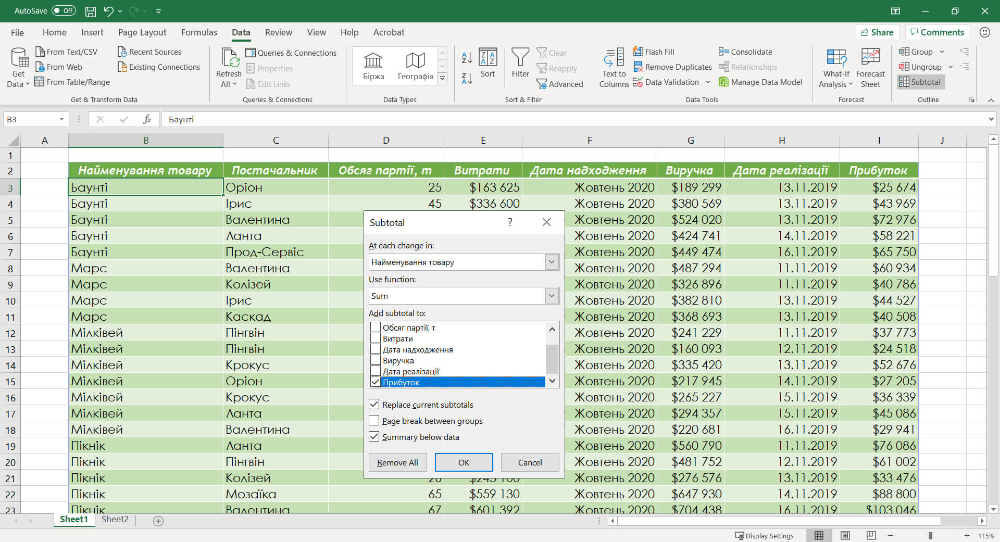
Команда Subtotal (Проміжні підсумки) вставляє в таблицю нові рядки, що містять спеціальну формулу =SUBTOTAL(Function_num;Ref;[ Ref2]) – повертає проміжні підсумки списку або бази даних.
(обов’язковий)
(обов’язковий)
(не обов’язковий)
Після появи проміжних підсумків, зліва на поточному аркуші Excel додається відображення структури. Воно складається з елементів управління трьох типів:
- кнопки рівня, позначені цифрами (максимум 8), представляє собою рівень організації в таблиці, натиснувши кнопку рівня, можна приховати всі підсумки на цьому рівні;
- кнопки Hide Detail (Стисло) – при натисканні група вихідних записів, по якій підбивалися підсумки, згортається, і висвічується лише підсумковий рядок;
- кнопки Show Detail (Докладно) – при натисканні на таку кнопку над підсумковим рядком з'являється група вихідних записів.
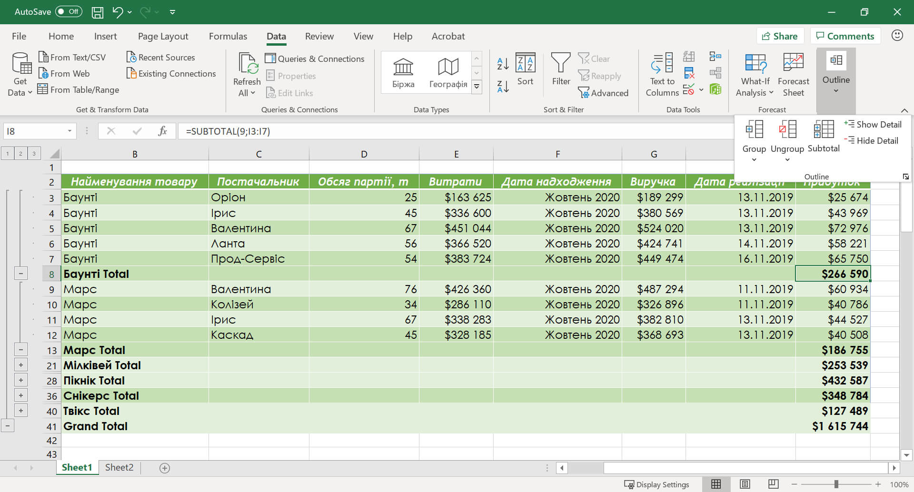
Якщо потрібно додати нові проміжні підсумки до вже існуючих, виконуємо описані вище дії з розрахунку одного проміжного підсумку, але у діалоговому вікні Subtotal (Проміжні підсумки) знімаємо прапорець навпроти команди Replace current subtotals (Замінити поточні підсумки).
Для видалення проміжних підсумків з аркуша треба у діалоговому вікні Subtotal (Проміжні підсумки) натиснути на кнопку Remove All (Видалити все).
Багаторівневі проміжні підсумки.
Бувають випадки, коли треба провести проміжні підсумки за низкою полів, в цьому випадку виконуються наступні кроки:
- зробити багаторівневе сортування по стовпцях, за значеннями яких потрібно буде підводити підсумки;
- виконати підведення підсумків, для поля, що задає верхній рівень сортування;
- обрати параметри для підведення підсумків по наступному рівню, при цьому обов’язково у діалоговому вікні Subtotal (Проміжні підсумки) зняти прапорець навпроти команди Replace current subtotals (Замінити поточні підсумки).
Консолідація даних.
Консолідація – об'єднання значень з декількох діапазонів в один новий діапазон відповідно до функції обробки. Діапазони що об’єднуються можуть знаходитися як на різних аркушах однієї книги, так і в різних книгах.
Для успішного об'єднання (консолідації), діапазони повинні відповідати певним вимогам – їхні заголовки рядків та стовпців повинні співпадати. Саме по першому рядку і лівому стовпчику кожного з діапазонів Excel шукає збіги і обробляє вихідні дані.
Для того щоб виконати консолідацію треба:
- зробити поточною будь-яку клітинку на аркуші, починаючи з якої буде розміщено консолідований діапазон;
- перейти на панелі інструментів до вкладки Data (Дані), у розділі Data Tools (Знаряддя даних) обрати команду Consolidate (Консолідація);
- у діалоговому вікні Consolidate (Консолідація) задати наступні параметри:
- в полі Function (Функція) обрати функцію, яка буде застосована при об'єднанні даних;
- поставити курсор в поле Reference (Посилання) і виділити перший діапазон консолідації разом з заголовками, натиснути Add (Додати), повторити для всіх вихідних діапазонів;
- у групі Use labels in (Використовувати як імена) поставити прапорці навпроти Top row (Підписи верхнього рядка) (якщо вихідні діапазони були виділені з заголовками) та Left column (Значення лівого стовпця);
- для застосування обраних параметрів натискаємо кнопку Ок.
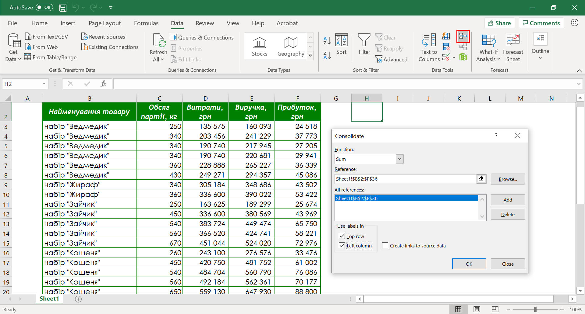